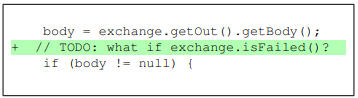
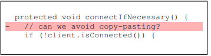

Recommendation of Refactoring Techniques to address Self-Admitted Technical Debt
The goal of the project is to support software developers in improving the quality of their code by the recommendation of the appropriate refactoring strategies to address Self-Admitted Technical Debt (SATD). To do so, we are designing and implementing a recommendation model that takes as input of existing SATD comments, and recommends the appropriate refactoring operations that needs to be performed as part of addressing the debt in the comment. Along with that we are also going to be classifying among which SATD comments is refactoring even required.
Our Team
Abdullah A Alsaleh
Department of Software Engineering
Data Science Master’s Student
Rochester institute of Technology
Rochester, USA
aa6304@rit.edu
Mohamed Wiem Mkaouer
Department of Software Engineering
Project Advisor
Rochester institute of Technology
Rochester, USA
mwmvse@rit.edu
Abdullah A Alsaleh
Department of Software Engineering
Data Science Master’s Student
Rochester institute of Technology
Rochester, USA
aa6304@rit.edu
SATD Example


Data collection
SATDBailiff : Mine out SATD classified source code comments.
Refactoring Miner: iterates through a repository's commit history in order to find refactoring types.

{kind=link}